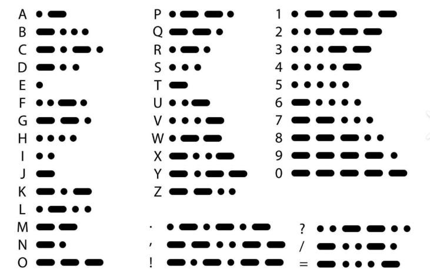

摩尔斯电码由美国发明家塞缪尔·摩尔斯（Samuel Morse）于1830年代发明，是一种通过点和划（短信号和长信号）来表示字母、数字和符号的编码方式。
摩尔斯电码的发明源于摩尔斯对快速通信的需求。在1832年，他在一次航海旅途中萌生了利用电信号传递信息的想法。经过多年的研究和改进，他于1844年成功通过电报机发送了第一条摩尔斯电码信息：“What hath God wrought”（神创造了什么）。
摩尔斯电码广泛应用于电报通信、军事和航空领域，成为现代通信技术的重要基础之一。
解密的原文或加密的密文在这里
